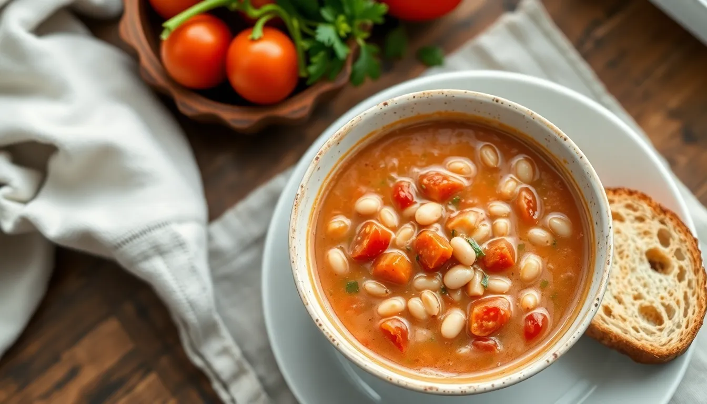

Creamy Tomato White Bean Soup
Prep time: 10 minutes - Cook time: 25 minutes - Total time: 35 minutes
Estimated total cost: $11.40 - Estimated cost per serving: $2.85 - Serves: 4

Ingredients
- 2 cans white beans, drained and rinsed — $2.00
- 1 can diced tomatoes — $1.20
- 1 small onion, diced — $0.80
- 2 cloves garlic, minced — $0.20
- 1 tablespoon oil — $0.20
- 3 cups vegetable broth or water with bouillon — $0.60
- 1 teaspoon Italian seasoning — $0.10
- 1/2 teaspoon salt — $0.05
- 1/4 teaspoon black pepper — $0.05
- 2 cups spinach, optional — $1.20
- 4 slices bread for serving — $1.00
Estimated ingredient total: $7.40 to $8.20
Displayed planning estimate: $11.40
Detailed Instructions
- Dice the onion and mince the garlic.
- Heat the oil in a soup pot over medium heat.
- Add the onion and cook for 4 to 5 minutes until softened.
- Add the garlic and Italian seasoning and cook for 30 seconds.
- Add the white beans, diced tomatoes, broth, salt, and black pepper.
- Stir well and bring the soup to a gentle simmer.
- Simmer for 15 minutes so the flavors blend.
- For a creamier texture, blend part of the soup with an immersion blender or mash some of the beans with a spoon.
- Stir in the spinach if using and cook for 2 more minutes.
- Taste and adjust seasoning.
- Serve hot with bread.
Helpful Notes
- Blending only part of the soup gives a nice thick texture without extra cream.
- Kale can replace spinach.
- This keeps well for lunch the next day.
Price Note
Ingredient prices can vary by store, brand, and region, so these are planning estimates rather than exact totals.